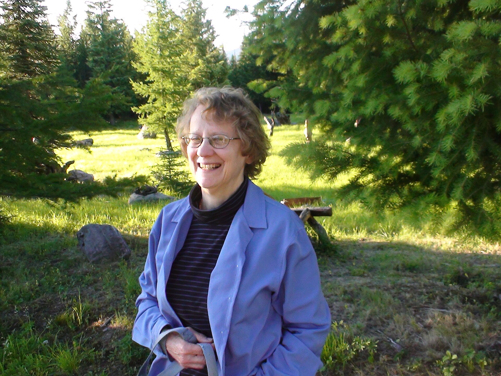

What Scholars Are Saying
Voices from Our Community
"[I] was genuinely impressed to see high school students engaging so meaningfully with linguistic research and documentation...The Warlpiri Grammar [seems] very thorough and well-written."

Kevin Morand
PhD Candidate, UMass Amherst · Mentor
"Founding the Lost Worlds Institute is awesome, and so important!"
Rob Painter
Professor, Northeastern University
"Lost Worlds Institute looks like a fascinating project — getting young people interested and involved in endangered-language revitalization — is crucial to the overall goal of slowing the appalling rate of language loss."

Sarah Thomason
Professor, University of Michigan
"This youth-led initiative, mindset, and spirit is excellent."
Yuchi Language Project
Oklahoma
"I am impressed at the scope and...conclusions you guys draw."
Madeline Snigaroff
PhD Candidate, University of Chicago · Mentor
"I am really excited that you are taking on this project and are interested in doing something that will increase the vitality of endangered languages...Good for you! You guys are really doing things."

Lenore Grenoble
Professor of Linguistics, University of Chicago